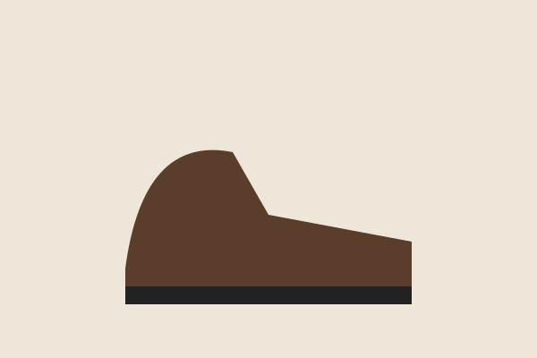
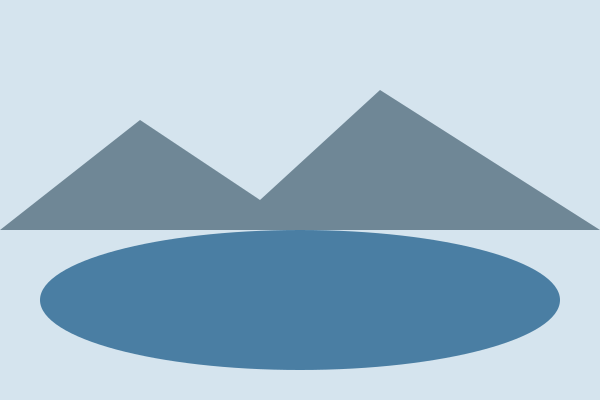

Stories from the mountains
Routes, gear and huts from two hikers who walk most weekends.

Latest stories
-

Crossing the Tatras in October
Three days, two huts and the first snow of the season.
-

Breaking in leather boots
What worked, what gave us blisters, and how long it took.
-

Five lakes in one day
The second day of the Tatras crossing, told on its own.